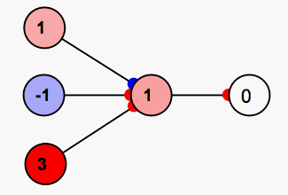

Network
Networks are built by creating neurons and connecting them with synapses. They are run by pressing the "play" or "step" buttons. (See the quick reference).
There are a variety of different neurons and synapses, each with their own rules and parameters. By combining these together you can create indefinitely many different kinds of networks. There are also special types of networks called "subnetworks" which can be added to a simulation. Different subnetworks can be linked together, leading to even more complex and powerful simulations.
There are also connection objects, layout objects, model groups and other functions which can be used to build neural networks.
Shown below is a simple neural network. The colored circles with numbers in the middle represent simplified neurons or "nodes." The lines between nodes represent synaptic connections between neurons which direct the flow of activity in the network. The smaller blue and red discs at the ends of these lines represent synaptic connections.

When
Simbrain is first opened nothing happens. A sample network sits
passively before the user. When the user "runs" the network it comes to
life--an update algorithm is
repeatedly called, which is visible in the form of spreading activity
in network's nodes and (if learning is activated) changing weight
sizes. The network can be run by pressing pressing the play button  in the tool-bar to repeatedly iterate the network. Note that the image on the button becomes that of a "stop" button
in the tool-bar to repeatedly iterate the network. Note that the image on the button becomes that of a "stop" button  .
Pressing this button will stop the network. Thus the play/stop button
acts as a toggle switch. You can also press the step button
.
Pressing this button will stop the network. Thus the play/stop button
acts as a toggle switch. You can also press the step button  (or press "space") to iterate the network a single time. Sometimes
repeatedly hitting the space bar is useful way to test a network.
(or press "space") to iterate the network a single time. Sometimes
repeatedly hitting the space bar is useful way to test a network.
Quick reference for meanings of colors, etc.
Zero neuron : a neuron with a value of 0 represents a non-active neuron, which is either not firing or is firing at a very low rate. In terms of voltages, this can be thought of as a neuron which is at its resting potential, that is, which has its baseline electrical charge, which is actually typically around -70mV (millivolts). In Simbrain this corresponds to the color 0.
Positive activation: a neuron with positive activation can be thought of as firing at above its normal rate. In terms of voltages, this can be thought of as a neuron which is above its resting potential, e.g. -50mV. Such a neuron is sometimes said to be "excited" or "depolarized." In Simbrain this corresponds to a shade of red by default.
Negative activation: it is hard to say what a neuron with negative activation corresponds to in terms of firing rates. In terms of voltages, this can be thought of as a neuron which is below its resting potential, e.g. -50mV. Such a neuron is sometimes said to be "inhibited" or "hyperpolarized." In Simbrain this corresponds to a shade of blue by default.
Excitatory synapse: a weight with a positive value corresponds to an excitatory synapse. When these synapses are activated the post-synaptic neuron is more likely to fire, they "heat things up," as it were. An excitatory synapse is one which releases excitatory neurotransmitters, which bind to channels post-synaptically which cause currents that lead to an increase in the post-synaptic voltage potential. AMPA synapses are a common type of excitatory synapse. Excitatory synapses are shown as red discs in Simbrain.
Inhibitory synapse: a weight with a negative value corresponds to an inhibitory synapse. When these synapses are activated the post-synaptic neuron is less likely to fire, they "cool things down," as it were. An inhibitory synapse is one which releases inhibitory neurotransmitters, which bind to channels post-synaptically which cause currents that lead to a decrease in the post-synaptic voltage potential. GABA synapses are a common type of inhibitory synapse. Inhibitory synapses are shown as blue discs in Simbrain.
Zero synapse: a weight with a value of 0 is a way of mathematically representing the absence of a connection. In Simbrain this is currently represented as blue, inhibitory.
Net input : the net input to a neuron represents, roughly, the summation of excitatory and inhibitory signals, from excitatory and inhibitory synapses, at the cell body.
Bias: the bias of a neuron can be thought as its base-line firing rate or its resting potential.
Clipping / Upper and Lower Bounds: There are upper and lower limits on the firing rate (in hertz) or voltage potential (in mV) of a neuron.
New Material
Confusion about clamping: The word "clamped" gets used both as a name for a kind of synapse and neuron update, and for the buttons in the toolbar, but the meaning is slightly different. The toolbar buttons are a kind of temporary override, while the update rules are permanent. I know you understand the distinction but I think I saw this come up somewhere so I thought I'd mention it. Clamped for neurons is useful mainly when it is input neurons that the user will manually set themselves. / This is a more general problem. The word "clamped" gets used both as a name for a kind of synapse and neuron update, and for the buttons in the toolbar, but the meaning is slightly different. The toolbar buttons are a kind of temporary override, while the update rules are permanent.